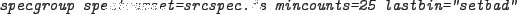

XMM-Newton Science Analysis System
specgroup (specgroup-1.6) [xmmsas_20170112_1337-16.0.0]
Treatment of the last bin and other ungrouped bins
In the case where the last few bins of the spectrum do not meet the
required statistical criterion for a normal group it may be treated in
several ways:
- Leave the bins ungrouped and set their quality to bad:
lastbin="setbad"
- Group them and set their quality good:
lastbin="owngroup"
- Add these bins into the final group:
lastbin="addtogroup"
The default is to add these bins onto the adjacent group. A different option
may be selected by e.g.

In principle, a set of user-defined ranges could leave ungrouped bins in
the middle of the spectrum. These will also be treated according to the
lastbin parameter setting.
XMM-Newton SOC/SSC -- 2017-01-12